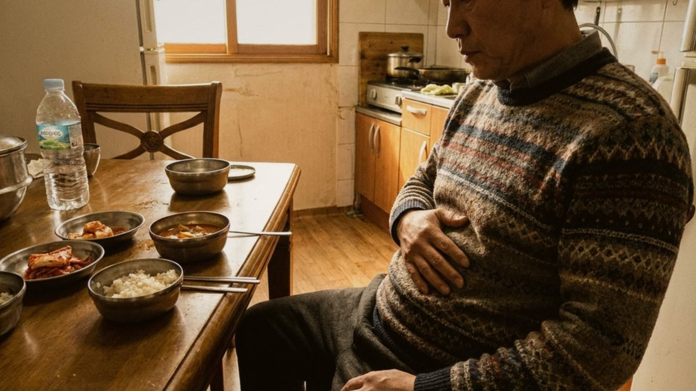
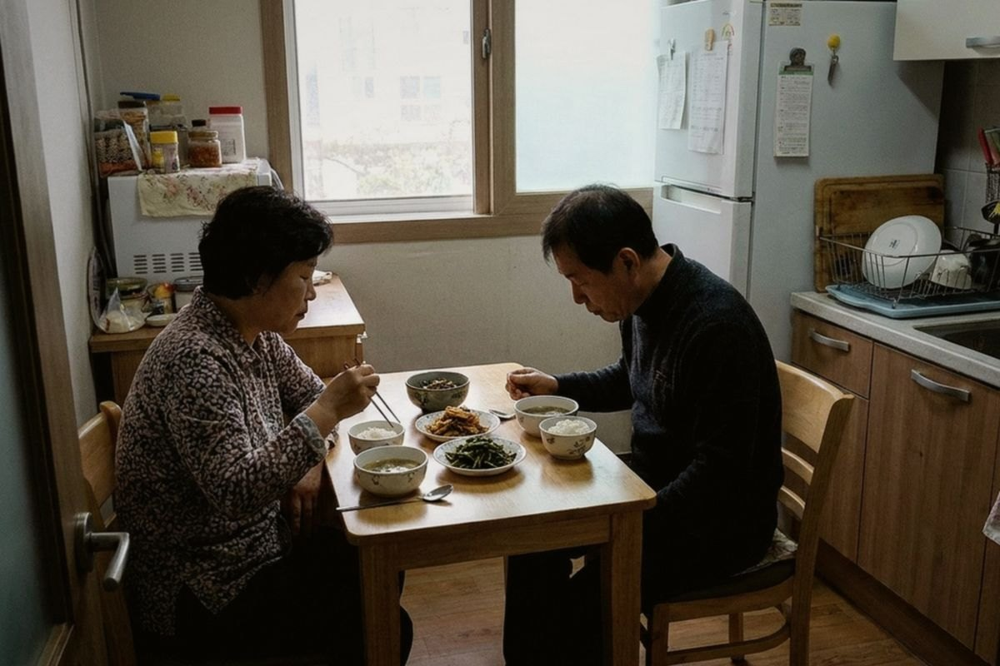
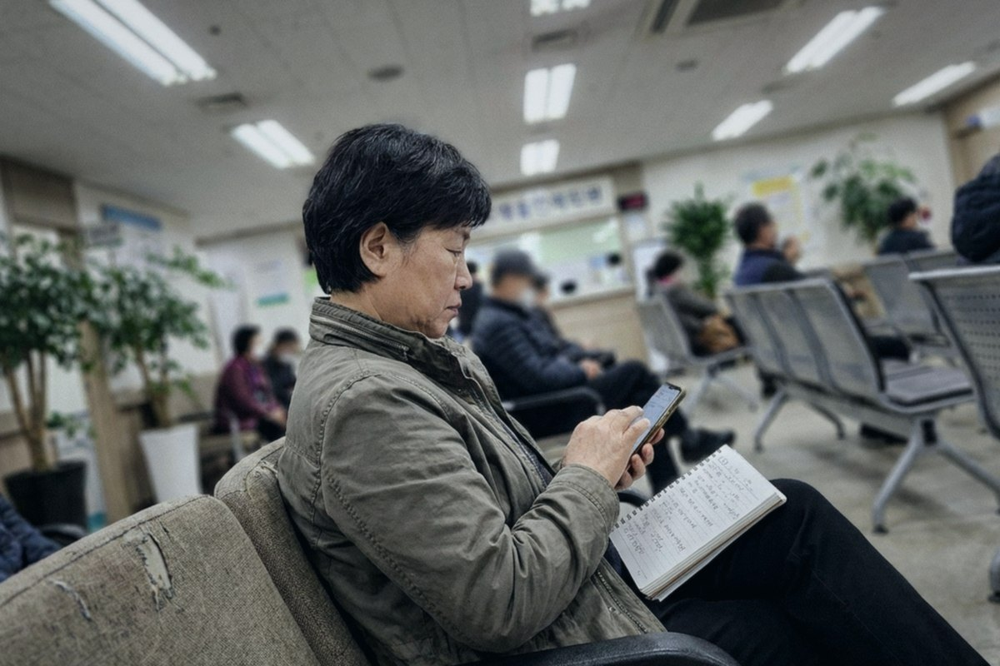

한 줄 결론: 식후 더부룩함이 잦다면 '한 번에 많이, 빨리, 기름지게' 먹는지부터 확인하세요. 다만 40세 이상에서 처음 생겼거나 체중 감소·반복 구토·삼킴 곤란·검은 변이 있으면 습관을 고치기 전에 진료부터 받아야 해요.
밥만 먹으면 배가 빵빵한데 소화제만 찾고 있나요? 질병관리청 국가건강정보포털은 기름진 음식, 과식, 불규칙한 식사, 스트레스를 증상을 악화시키는 요인으로 꼽아요.

네, 식후 더부룩함은 소화불량의 대표 증상이에요. 서울대학교병원 의학정보에 따르면 소화불량은 식후 포만감, 조기 만복감(몇 숟가락만 먹어도 배가 부름), 윗배 팽만감, 구역, 명치 통증, 속쓰림을 모두 아우르는 말이에요.
원인에 따라 두 가지로 나뉘어요.
| 구분 | 뜻 | 예 |
|---|---|---|
| 기질성 소화불량 | 증상을 일으키는 질환이 있음 | 소화성 궤양, 위암 등 |
| 기능성 소화불량 | 내시경·초음파 검사에서 특별한 이상이 없음 | 위 배출 저하, 위 적응 장애, 위의 예민한 반응 등 |
생활 습관 조절은 주로 기능성 소화불량에서 의미가 있어요. 질환이 원인인데 습관만 고치면 진단이 늦어질 수 있으니 아래 '병원에 가야 하는 신호'부터 확인하세요.
한 끼 양, 먹는 속도, 기름기, 기호식품, 식사 시간이 먼저 볼 항목이에요. 대한내과학회지 종설은 연구가 아직 부족하다고 전제하면서도 불규칙한 식사, 과식, 빨리 먹는 습관이 기능성 소화불량과 관련 있다고 정리했어요.
식후에 몸을 움직이는 것도 괜찮아요. 국가건강정보포털은 가벼운 유산소 운동이 증상 완화에 도움이 된다고 설명해요. 다만 식사 직후의 과격한 운동은 오히려 불편감을 부를 수 있어요.

그렇지 않아요. 흔히 하는 실수가 바로 이거예요. 국가건강정보포털은 가끔 한 끼를 거르는 건 괜찮지만, 습관적으로 거르면 영양 불균형이 생겨 결국 손해라고 설명해요.
흰죽 같은 유동식은 위에서 빨리 빠져나가요. 하지만 증상은 위 배출 속도와 상관없이 생기는 경우가 대부분이에요. 그래서 유동식만 먹으라고 권하는 건 바람직하지 않다고 봐요. 증상을 일으키지 않는 음식까지 끊기보다는 골고루 먹는 편이 낫다는 게 공식 입장이에요.
식사 기록으로 찾아요. 음식에 대한 반응은 사람마다 달라서 내 증상을 악화시키는 음식을 직접 파악하는 게 중요해요.
기록할 항목
스트레스·불안·수면장애도 증상과 연관이 있으니 잠과 스트레스도 함께 적어 두세요.
국가건강정보포털이 증상을 일으킬 수 있다고 꼽은 음식은 우유·유제품, 밀가루 음식, 매운 음식, 탄산음료, 커피, 견과류, 소시지, 베이컨, 튀김, 양파, 후추, 초콜릿, 감귤류, 술, 향신료예요.
이 목록을 다 끊으라는 뜻은 아니에요. 식이 조절 연구는 결과가 엇갈리고 음식을 가렸을 때의 효과 근거도 아직 부족해요. 내 기록에서 반복해서 걸리는 음식만 줄여 보세요.
아래 중 하나라도 해당되면 습관 조절보다 진료가 먼저예요. 국가건강정보포털은 40세 이상 소화불량 환자에게 위내시경 검사를 권하고, 40세 미만이라도 경고 증상이 있으면 일찍 검사하도록 안내해요.
내과(소화기내과) 진료가 필요한 경우
바로 119에 연락해야 하는 경우

| 상황 | 할 일 | 근거 |
|---|---|---|
| 한 번에 많이 먹음 | 양을 줄이고 하루 4~5회로 나누기 | 서울아산병원 |
| 기름진 음식 뒤 더부룩함 | 튀김 줄이고 찌기·삶기로 조리 | 국가건강정보포털, 서울아산병원 |
| 커피·탄산·술 뒤 악화 | 섭취 줄이기 | 국가건강정보포털 |
| 끼니 거르기, 흰죽만 먹기 | 증상 없는 음식은 골고루 먹기 | 국가건강정보포털 |
| 40세 이상 첫 증상, 경고 증상 | 내과 진료·위내시경 | 국가건강정보포털 |
| 명치·가슴 통증 30분 이상+식은땀 | 119 | 국가건강정보포털 |
Q. 속이 더부룩할 땐 한 끼 굶는 게 낫나요?
A. 어쩌다 한 번은 괜찮지만 습관이 되면 영양 불균형으로 손해예요. 양을 줄여 나눠 먹는 쪽이 권장돼요.
Q. 20~30대인데 내시경을 꼭 받아야 하나요?
A. 경고 증상이 없다면 꼭 그렇지는 않아요. 위암 가족력이 있거나 치료해도 증상이 계속되면 내시경으로 다른 질환을 확인해야 해요.
다음 할 일: 다음 끼니부터 먹은 시각·메뉴·양·증상을 기록해 보세요. 위의 경고 증상이 하나라도 있다면 습관 조절보다 내과 진료 예약이 먼저예요.
*2026년 11월 기준, 질병관리청·대학병원·학회 공식 자료 확인. 이 글은 생활 관리 정보이며 진단이나 처방을 대신하지 않아요.*